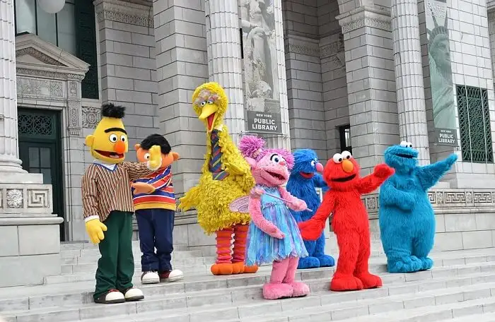
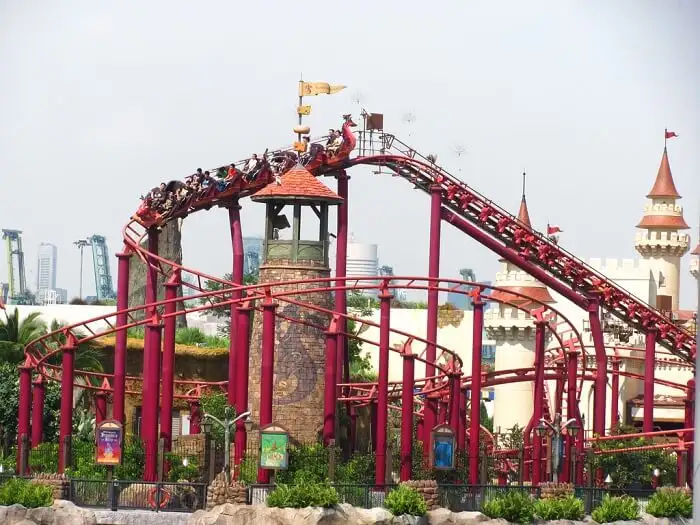

UNIVERSAL STUDIO SINGAPORE
If there is a wonderland on the earth, it is called Universal Studio Singapore, the place where all your wild-child fantasies come true.
A gigantic theme park located on Sentosa Island in Singapore is your ultimate stop for fun and leisure. It is Southeast Asia’s only park that features 24 exhilarating rides and a number of shows and attractions in not one but seven theme zones.
While it is a whoopee playground for children, adults are also not able to stop themselves from going berserk with fun. Meet your favourite Hollywood stars and even dine with them, watch jaw-dropping stunts and sci-fi shows, or chase the dinosaurs from Jurassic Park. There is so much you can enjoy at a one-of-its-kind theme park. Oh! And did we tell you about the monster rides in the park? Even after the day is over, you would find it hard to leave this place.
11 Experiences You Must Have In Universal Studio Singapore
Spend a day filled with amusement and leisure with your family or friends at Universal Studio Singapore. While there is so much happening inside the park, here are a few experiences you should strike off the list before your day at Universal Studio Singapore is over.
1. Lights, Camera, Action! With Steven Spielberg
If you are a big Steven Spielberg fan and have grown up watching Jurassic Park, Jaws, and Indiana Jones, you are gonna wanna like the Lights, Camera, Action! with Steven Spielberg. The show is packed with action and mind-blowing special effects for which the director is renowned. Be blown by the incredible set and sound system as the finest special effects come into play on the empty stage.
2. Hop On The Tummy-Twirling Battlestar Galactica Ride
The Universal Studio Singapore rides are one thing people look forward to because they are phenomenal! Just looking at the gigantic metal structure will make adrenaline rushing hard in your veins. Battlestar Galactica, the star Universal Studio Singapore roller coaster, is a pair of two roller coaster one of which is inverted. The worlUniversald’s tallest duel roller coaster takes you on the most tummy twisting ride of your life. Once you are off the ride, make sure none of your internal organs are displaced.
3. Explore And Roar With The Dinosaurs In The Jurassic World
Oh no! The dinosaurs have taken over the Universal Studio. Lol! If you are a 90’s kids, there is no denying what a big fan of Jurassic Park you must be. Watch T-rex and Velociraptor come alive in the Jurassic World and embark on exciting adventures in an all-new exciting augmented reality experience. That’s not it! You can even take cool Universal Studios Singapore rides based on Jurassic park theme like Dino-SoarIn and canopy flyer. You can even sign yourself up for a course to learn how to tame the wild Velociraptor who has been creating havoc.
4. Watch The Action-Packed Waterworld Stunt Show
If you are into action theme, you are gonna love the Waterworld Stunt Show were performers put a hair–raising spectacle of death-defying stunts. One of the popular Universal Studios Singapore attractions, there is fire over water and stuntmen somersaulting over the dangerous fire on jet-skis live in front of you. The thrills and chills from the real explosions of water and fire is utterly sensational and not to be missed at any cost.
5. Meet And Greet Your Favorite Stars
Ever wish of meeting your favorite Hollywood stars in person? Get your photos clicked with the impersonations of legendary stars in the streets of Universal Studio like Marilyn Monroe if not real. This is one of the popular things to do in Universal Studios Singapore amongst the little ones. Bump into Autobots from Transformers or be a part of shenanigans with Minions. Be a part of the Egyptian Royalty as you experience the Golden Age of Ancient Egypt.
6. Come, Be A Part Of Street Parade

Keep an eye on the performances and parades happening on the streets of Universal Studio because that is also where the excitement and magic happen. Watch your favorite characters like Shrek, Dinosaurs from Jurassic Park, and monsters from The Mummy come alive on the streets. Shake a leg to the best dance performances or Rattle and Roll with Met’s Dine-in waitresses. Watching Puss in the Boots dancing for magic beans will make you roll out in laughter and you won’t be able to stop yourself from doing the boogie dance with Madagascar characters.
7. Be Stupefied By The Spectacular Fireworks
Every day is the 4th of July at Lake Hollywood Spectacular where you can watch scintillating and the prettiest fireworks in the sky. The incredible fireworks coupled with brilliant music score will raise the hairs on your arms. You don’t have such mind-blowing fireworks in India during the Diwali celebrations. The show only happens on the weekends. Check the timings of the fireworks before you begin your experience so you don’t miss it.
8. Have Breakfast With Sesame Street Characters
Have a fun-filled morning in the Universal Studio Singapore as you gorge on a hearty breakfast buffet with Sesame Street friends. If on normal days, your kids annoy you for not eating, they are gonna love sharing pancakes and cookies with Elmo and Oscar. This is something a whole family can enjoying doing in the Studio. Do not forget to take pictures. You can even celebrate your kids’ birthdays here if you notify them in advance.
- Timings:9 AM to 10:30 AM
- Price:INR 2500 for adults, INR 1800 for kids aged 4-12 years, Admission free for kids below 4 years
9. Go Shopping In Universal Studio Singapore
You won’t be able to stop yourself from running store after store and burning a hole in your pocket because there is so much you would want to shop in Universal Studio Singapore. Whether it is a soft toy of your favorite character or Jurassic Park themed T-shirts, Hollywood memorabilia or an exclusive range of toys, there is an extensive range of novelties in Universal Studio Singapore shopping arena and you would want to buy them all.
10. Head On A Treasure Hunt
Join the treasure hunt in a new style at Universal Studio Singapore where you drive a vintage motor car through an abandoned excavation site in the forbidden land of Egypt. Kids really dig treasure hunt adventures. If you too are visiting with one, venturing out into the wild together will be a great bonding activity for you.
11. Time To Become Indiana Jones
Time to be Indiana Jones as you scale the high walls of the Lost World just as you have seen him doing in the movies. Explore the fossils of insects and precious stones on the wall. It is not as easy as it seems and if you manage to reach all the way to the top, you are in for a great surprise. It is a fun activity for both children and adults alike.
Universal Studio Singapore Ticket Price
There are various types of tickets, passes, and experiences available in Universal Studio Singapore.
Universal Studio Singapore entrance fee for a day costs INR 5,235. You can find many online promotions and deals if you want to procure cheap tickets to Universal Studio Singapore.
Universal Studio Singapore Express Pass starts from INR 2000 and INR 3500 which allows you to use shorter and separate queues for main attractions and rides inside the park. If you buy them before the peak season, you might get them for even cheaper prices. While Universal Express pass is valid only one time per attraction, Unlimited Universal Express gives you unlimited access to the rides. However, you should note these are not entry tickets.
How To Reach Universal Studio Singapore

Universal Studio Singapore is a part of Resorts World Sentosa which can be reached using a variety of transport modes.
By Bus
There are buses available on various routes to Resorts World Sentosa. The bus fare is as low as INR 70 and will cost you no more than INR 300 per person.
By Monorail
Proceed on Level 3 at Vivocity Station to board the Sentosa Express. The ticket for the Sentosa Express Monorail costs about INR 300 per person.
By Cable Car
Singapore Cable Cars System to Resorts World Sentosa is available from Harbourfront Tower 2. Disembark at Imbiah Station and take the Sentosa Express Monorail.
By Taxi or Car
Ask your taxi driver to drop you at ‘taxi drop-off point in underground car-park. If you are driving on your own, you can park your car in the underground station which costs 7 for 1st hour and $1for subsequent half hour.
Miscellaneous
- You can re-enter the park in the middle of your visit if you have got a re-entry stamp on your ticket before heading out.
- Wheelchairs and strollers are available at the entry gate and can be hired for nominal charges.
- Come early since there is less foot traffic in the morning and you can easily take photos in front of Universal Studio Globe without getting photobombed.
- Wear light and bearable clothing since the weather is hot and humid in Singapore. Also, wear comfortable shoes since you are going to walk around the studio a lot.
- Confirm the timings of the show you want to watch so that they don’t clash with anything else.
Also, keep in mind that some of the shows only happen over the weekends. Plan accordingly before you visit.
- All rides in the park have minimum height criteria which you strictly need to follow.